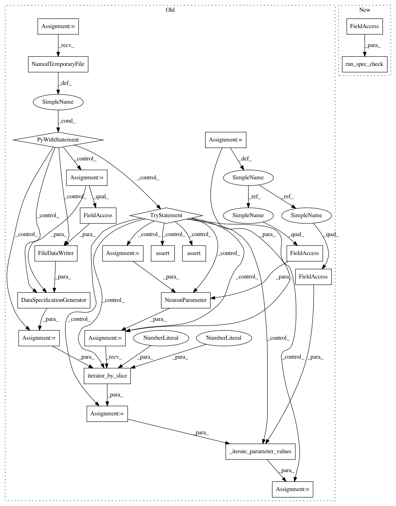

ce97bd12291a373069a5dbec3d5dcd59f2f4a367,unittests/model_tests/neuron/test_neural_parameter.py,,test_single_value,#,94
Before Change
def test_single_value():
MockSimulator.setup()
with tempfile.NamedTemporaryFile() as temp:
spec = DataSpecificationGenerator(FileDataWriter(temp.name), None)
try:
value = 1.0
param = NeuronParameter(value, DataType.S1615)
iterator = param.iterator_by_slice(0, 5, spec)
values = _iterate_parameter_values(iterator, DataType.S1615)
assert [value] * 5 == values
assert isinstance(iterator, _SingleValue_Iterator)
finally:
spec.end_specification()
After Change
assert isinstance(iterator, _SingleValue_Iterator)
def test_single_value():
run_spec_check(single_value)
In pattern: SUPERPATTERN
Frequency: 3
Non-data size: 23
Instances
Project Name: SpiNNakerManchester/sPyNNaker
Commit Name: ce97bd12291a373069a5dbec3d5dcd59f2f4a367
Time: 2020-01-15
Author: christian.brenninkmeijer@manchester.ac.uk
File Name: unittests/model_tests/neuron/test_neural_parameter.py
Class Name:
Method Name: test_single_value
Project Name: SpiNNakerManchester/sPyNNaker
Commit Name: ce97bd12291a373069a5dbec3d5dcd59f2f4a367
Time: 2020-01-15
Author: christian.brenninkmeijer@manchester.ac.uk
File Name: unittests/model_tests/neuron/test_neural_parameter.py
Class Name:
Method Name: test_range_list_as_list
Project Name: SpiNNakerManchester/sPyNNaker
Commit Name: ce97bd12291a373069a5dbec3d5dcd59f2f4a367
Time: 2020-01-15
Author: christian.brenninkmeijer@manchester.ac.uk
File Name: unittests/model_tests/neuron/test_neural_parameter.py
Class Name:
Method Name: test_single_value
Project Name: SpiNNakerManchester/sPyNNaker
Commit Name: ce97bd12291a373069a5dbec3d5dcd59f2f4a367
Time: 2020-01-15
Author: christian.brenninkmeijer@manchester.ac.uk
File Name: unittests/model_tests/neuron/test_neural_parameter.py
Class Name:
Method Name: test_range_list